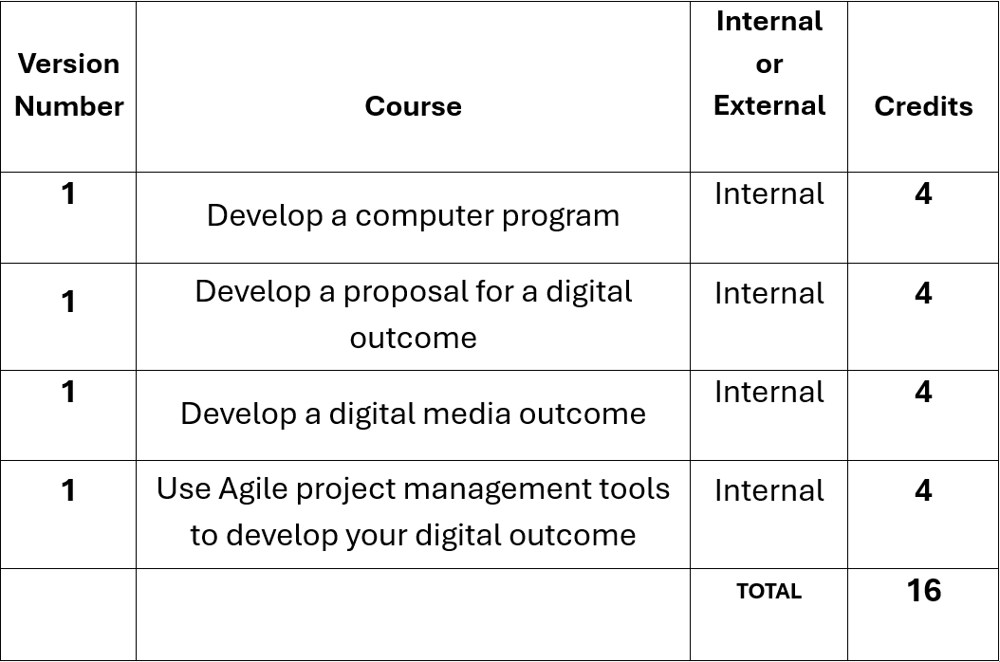

This course covers Year 11 Digital Technologies. One skill that is being developed across the board is the ability to think through implications as outcomes are designed and implemented. This involved ‘thinking through’ what could happen and why before proceeding down a path on a particular course of action. SPECIAL NOTE: Students will be required to work on a BYOD laptop capable of running Adobe Creative Cloud and Microsoft Office 365 software for which student licenses will be available as part of the course fee. Devices will also need to be capable of running a local IDE (Integrated Development Environment) such as for example Visual Studio Code, Pycharm etc.
There are a total of 16 compulsory credits available at Year 11 Digital Technologies
This course does not offer Course Endorsement as an option
Please note:
This course does not offer reassessment opportunities
Single assessment opportunities only are available for all internal courses offered.
Each unit will be assessed through assignments as required by each NCEA Standard. There will not be a mid-year exam, although students will have the opportunity to complete assignment work during this time. Assignments will cover course content, personal application and reflection.
Please see the student guide - 2026 for all assessment matters related to the following:
School computers are no longer available during allocated periods, except for emergency purposes should a student laptop malfunction. If you are working on files on a laptop or other device, it is essential to have created cloud backups and to ensure that you have the latest version available during class sessions. All students must have earphones available for listening to tutorials as available during class.
Digital Technologies is an exciting field of growth in terms of both industry developments, as well as huge potential in the job market. How much you get out of this course will have a lot to do with how much you put in. The aim of this course is to introduce you to the Technological Process, as well as give you a taste of a broad range of the areas that Digital Technologies offers: Digital Information; Digital Media; Programming and Computer Science; and Digital Infrastructures. The aim is to expose you to as many aspects of digital technologies as is practicable in order that you have the opportunity to explore areas of interest and discover aptitudes that you may have and which could lead to further study or even avenues of employment in the future.

With best wishes for a great year of learning.
Mr. Lier
TIC Digital Technologies
Year 11 DGT Course outlines 2026 PDF:
Download